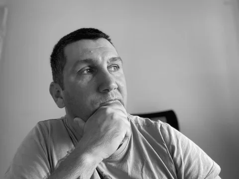

Cine scrie și întreține ∑ Teoreme.

Mă numesc Moldovan Cristian. Nu sunt matematician și nici profesor: sunt părinte de elevi. Urmărind temele și lecțiile copiilor, am observat că în limba română nu există un site care să prezinte teoremele într-un singur loc, explicate complet și pe înțelesul tuturor.
∑ Teoreme este răspunsul meu la această lipsă: un loc gratuit, fără cont și fără abonament, unde elevii și părinții găsesc enunțul, formula, o explicație intuitivă și exerciții rezolvate pas cu pas.
În afara acestui proiect scriu pe jurnalul meu, thinkroot.xyz, despre Linux, software liber, confidențialitate și web-ul independent. Mai multe despre mine găsești pe pagina „Despre” a jurnalului.
Textele și exercițiile sunt scrise cu ajutorul instrumentelor de inteligență artificială și verificate de mine. Pentru că nu sunt specialist, tratez corectitudinea cu seriozitate:
Ai găsit o greșeală? Scrie-mi și o corectez.